Shows up in guest searches
Turo lets guests filter for Apple CarPlay and Android Auto. Once it’s installed, add it to your listing features and show it in your photos.
Turo guests filter for CarPlay. We install it at your location around your bookings, and leave a one-page guest guide in every car.
Guest guide for every car1-year hardware warrantyLifetime tech support
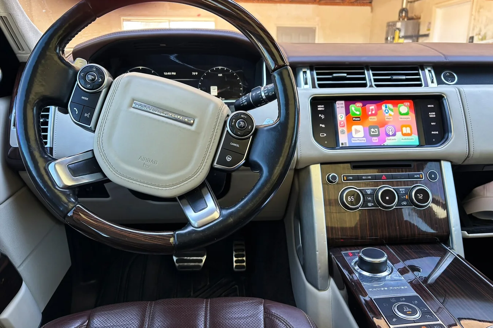
We work on
It’s one of the features guests look for first, and it makes an older luxury car feel current.
Turo lets guests filter for Apple CarPlay and Android Auto. Once it’s installed, add it to your listing features and show it in your photos.
Every car gets a one-page guide with pairing steps and a QR code to a video walkthrough. Print it for the glovebox or send it before pickup.
We come to your location when the car is free, test everything, and it’s ready for the next guest.
Real customer cars. This is the same setup your guests will use.
Kept factory screen
Wireless Apple CarPlay and Android Auto added to the original Range Rover display. Nothing in the dash changes.
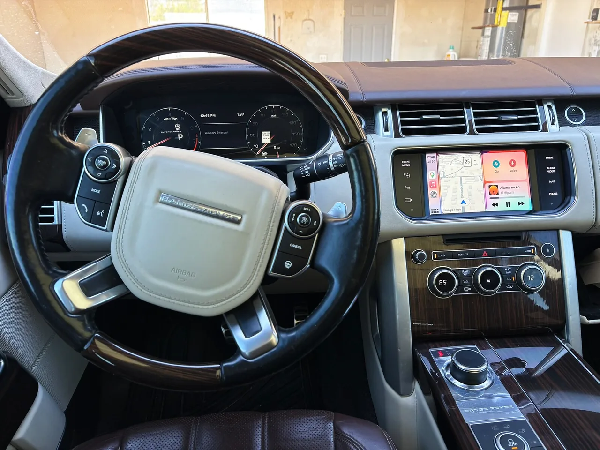
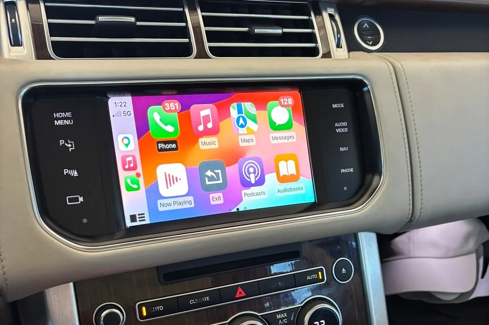
New display
A widescreen touchscreen in place of the original BMW display, with Apple CarPlay and Android Auto. The factory iDrive menu and cameras are still there.
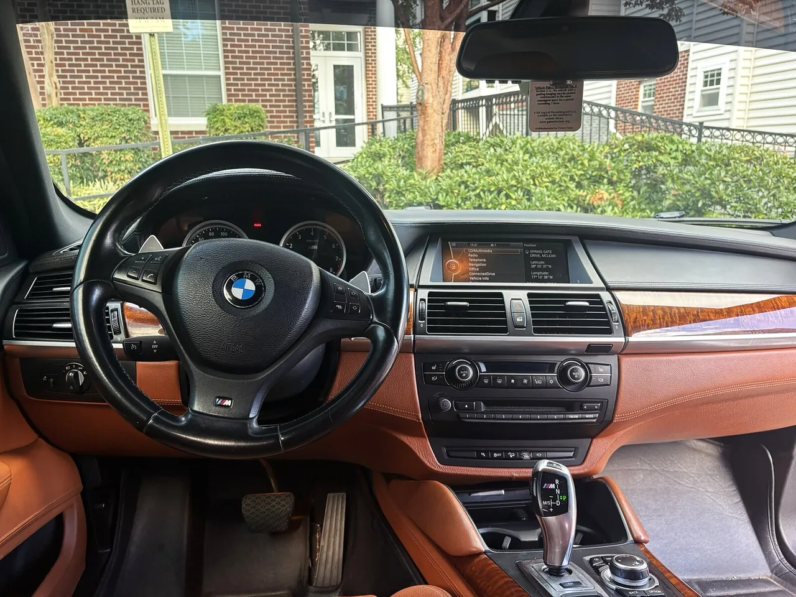
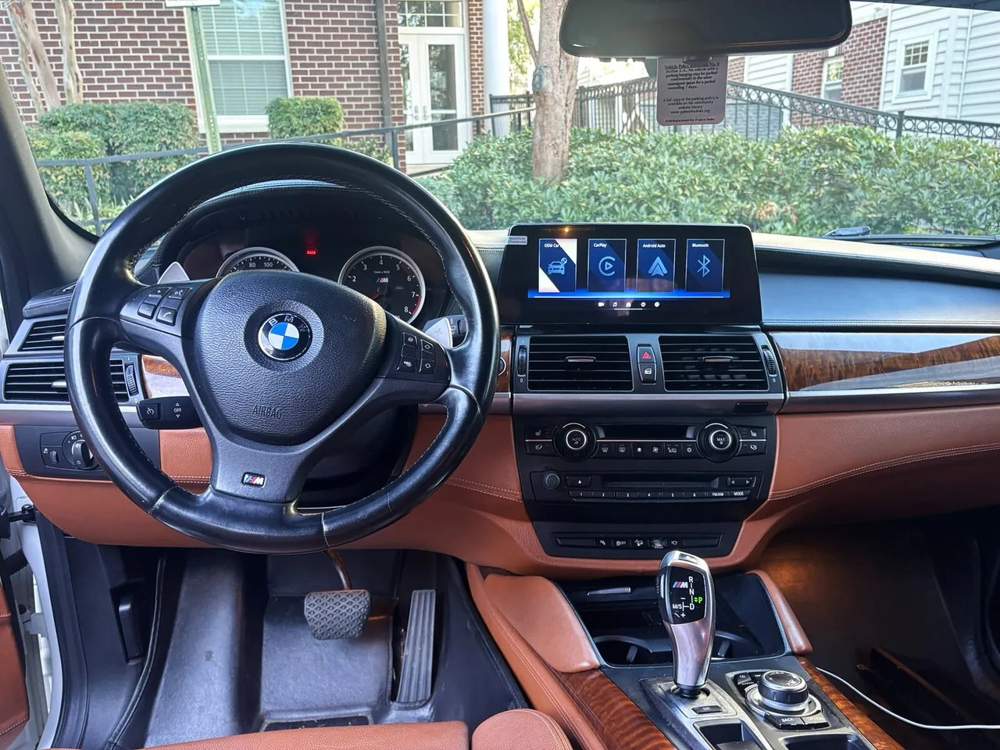
New display
A widescreen touchscreen in place of the original BMW display, with Apple CarPlay and Android Auto.
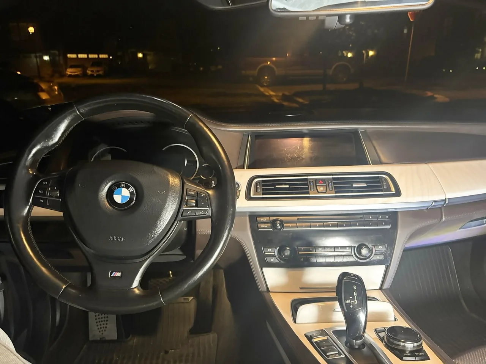
New display
A widescreen touchscreen in place of the original BMW display, with Apple CarPlay and Android Auto.


New display
A replacement touchscreen with Apple CarPlay, fitted into the original E60 screen hood. The factory CCC menu is still there.


New display
A larger replacement touchscreen with Apple CarPlay, fitted to the original dash.
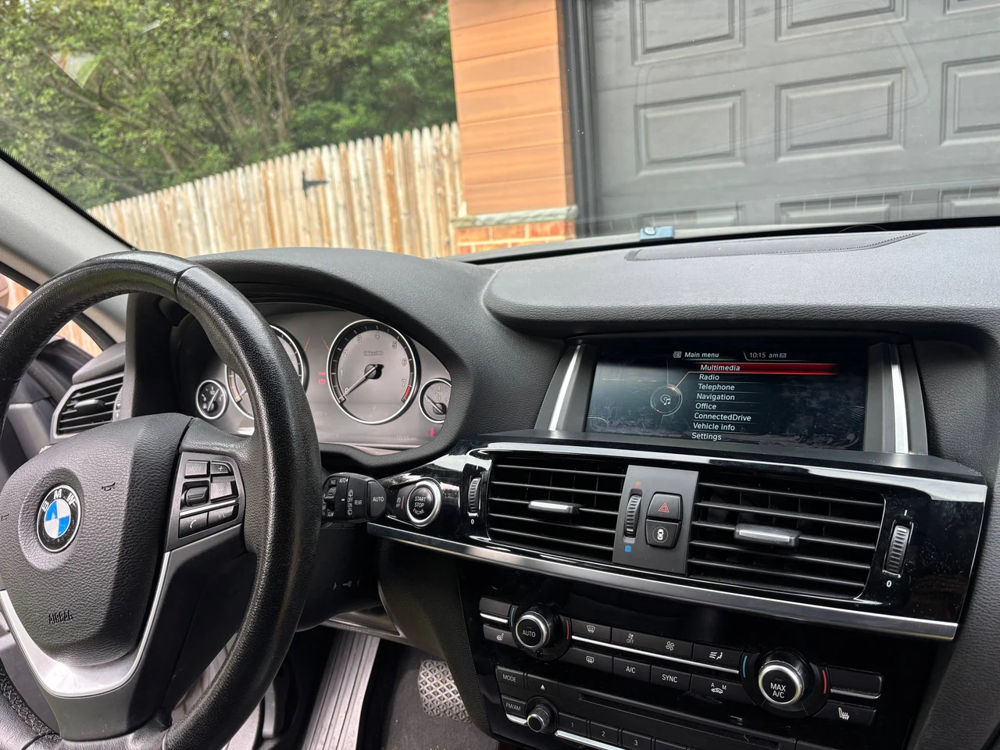
New display
The small original screen swapped for a larger touchscreen with CarPlay.
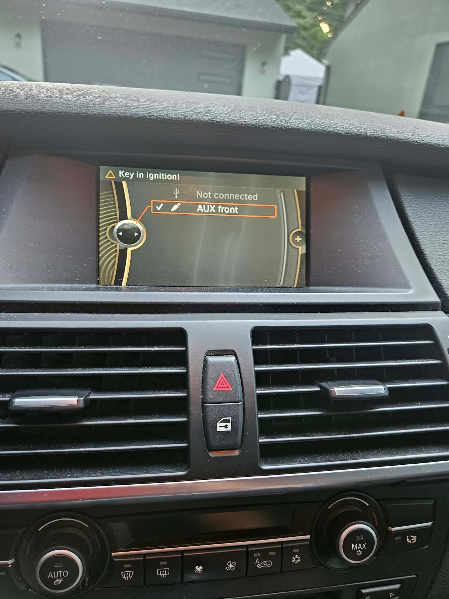
Kept factory screen
CarPlay added to the original BMW display. Nothing in the dash changes.
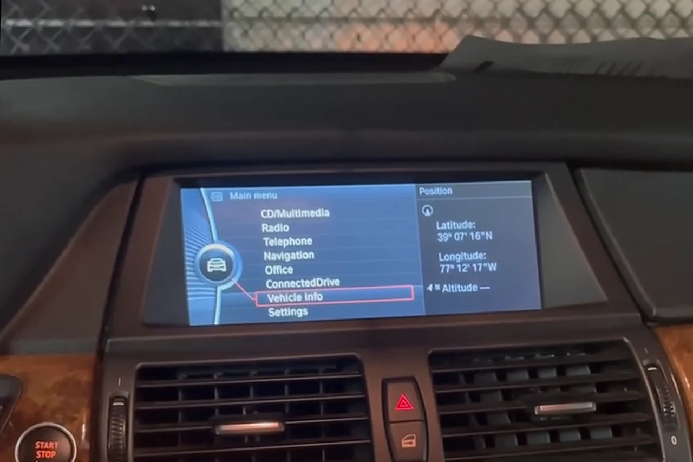
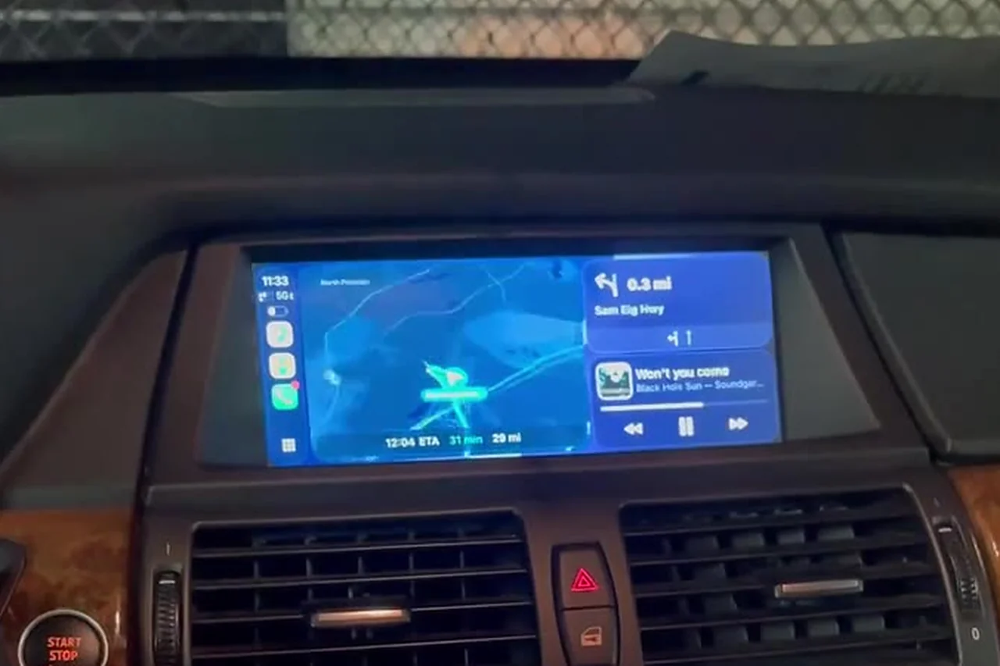
Kept factory screen
CarPlay added to the original BMW display. Nothing in the dash changes.
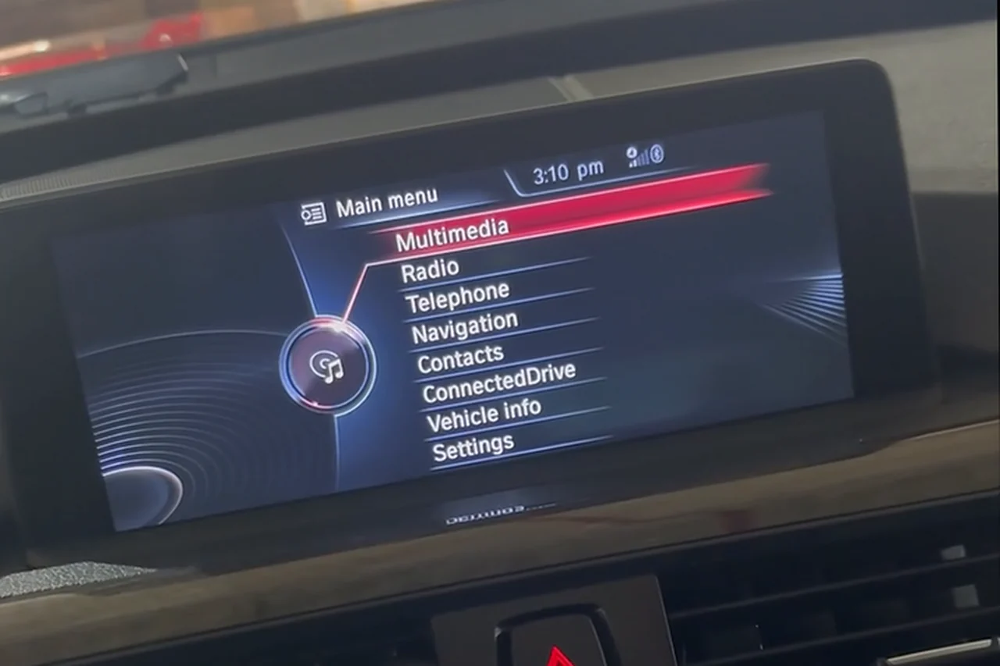
One page with pairing steps and a QR code to a video walkthrough. Print it for the car or send it before pickup.
One car or ten, it’s the same simple process.
Make, model and year for each car, plus a photo of each screen.
An itemized price for every car, with the hardware and the install schedule.
At your location, around your bookings. Pairing, audio, camera and factory menus are all tested.
You get a walkthrough and a guest guide for each car, ready to print or send.
“David knows his stuff and was great to work with. Showed up on time, performed the work in the timeframe he quoted and price was fair. CarPlay works great in my 2015 BMW.”
“He brought a high-quality CarPlay head unit to my house (looks just like OEM!) and installed it with his tools in about 90 minutes. When he was finished, he made sure that my phone connected properly, and that I was satisfied.”
“He finished the install in a short amount of time, left the car in better shape than he found it, and made sure I was happy. After he left he still helped me troubleshoot.”
Add the cars you want upgraded. We’ll reply with the right setup for each one, a price and an install schedule.
Ready to send
Send this list and add a photo of each car’s screen. We’ll reply with a price for every car and an install schedule.
Guests can filter Turo searches for Apple CarPlay and Android Auto, so an upgraded car shows up for people who want it. After the install, add both to your listing features and show the screen in your photos.
Add Apple CarPlay and Android Auto in your listing’s features. If they aren’t offered for your car’s trim, Turo support can add them. Turo’s feature guide
Yes. Send us the list and we’ll plan one visit, or a few, around your bookings.
Every car has a guest guide with pairing steps and a QR code to a video walkthrough. If something still isn’t working, text us. Tech support is included for life.
Every install comes with a 1-year hardware warranty and lifetime tech support for software or connection issues.
See prices, real installs and the fit checker for personal vehicles.